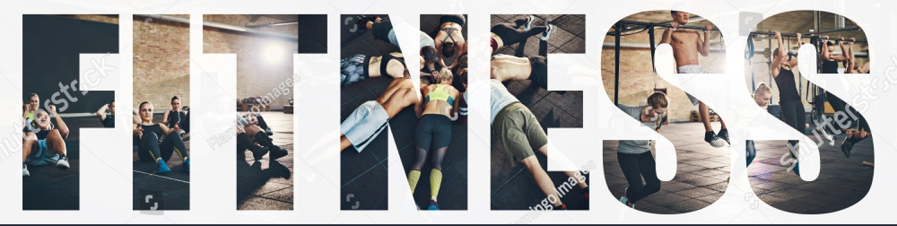
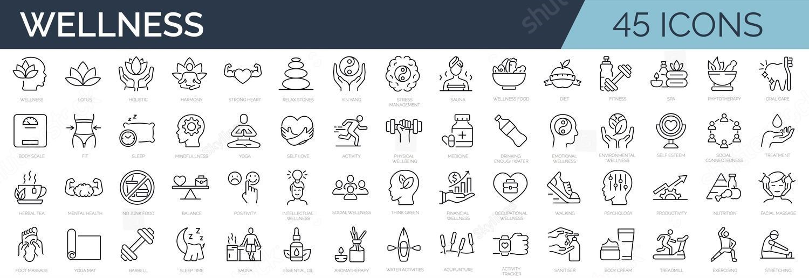

Exerts define physical fitness as “one’s ability to execute daily activities with optimal performance, endurance, and strength with the management of disease, fatigue, and stress and reduced sedentary behavior.”
This description goes beyond being able to run quickly or lift heavy weights. Despite being important, these attributes only address single areas of fitness.
This article provides details of the five main components of physical fitness.
Fitness
Overview
Being physically fit depends on how well a person fulfills each of the components of being healthy.
When it comes to fitness, these components are:
cardiorespiratory fitness
muscular strength
muscular endurance
body composition
flexibility

Advantages of Gym Workouts
If you have a gym membership or you're thinking about signing up for one, the most important thing to remember is that you have to use it. The advantages of gym workouts are that they provide several different ways to exercise, so going to the gym every day does not have to become boring and tedious.
The U.S. Department of Health and Human Services recommends that adults get a minimum of 150 minutes a week of moderate-intensity or 75 minutes a week of vigorous-intensity aerobic activity. Plus, you should include two or more days of muscle-strengthening exercises that involve all major muscle groups.
At first, this probably seems like a lot of exercise. However, if you spread those minutes out over the course of a week, you'll soon see just how easy it is to fit it in, especially if you're going to the gym every day.

Cardiorespiratory performance
Cardiorespiratory endurance indicates how well the body can supply fuel during physical activity via the body’s circulatory and respiratory systems.
Activities that help improve cardiorespiratory endurance are those that cause an elevated heart rate for a sustained period of time.
>These activities include:
swimming
brisk walking
jogging
cycling
People who regularly engage in these activities are more likelyTrusted Source to be physically fit in terms of cardiorespiratory endurance. It is important to begin these activities slowly and gradually increase the intensity over time.
Exercising increases cardiorespiratory endurance in a number of ways. For example, the heart muscle becomes stronger so that it is able to pump more blood per heartbeat.
At the same time, additional small arteries grow within muscle tissue so that they can deliver blood to working muscles more effectively when needed.
How does heart health change with exercise?
The heart’s efficiency changes and improves after persistent training. However, recent research suggests that different types of activity change the heart in subtly different ways.
All types of exercise increase the heart’s overall size, but there are significant differences
The hearts of endurance athletes show expanded left and right ventricles, whereas those of strength athletes show thickening of the heart wall, particularly the left ventricle.
How does lung health change with exercise?
Although the heart steadily strengthens over time, the respiratory system does not adjust to the same degree. Lung size does not change, but the lungs do use oxygen effectively
In general, exercise encourages the body to become more efficient at taking on, distributing, and using oxygen. Over time, this improvement increases endurance and overall health.
Health benefits of cardiorespiratory fitness
Cardiorespiratory fitness can help reduce the riskTrusted Source of conditions including:
There are a number of ways to measure muscular strength.
Generally, lifting a set weight in a prescribed position and comparing the results against any given population is the best way.
In general, if a person works their muscles consistently and regularly, they will increase in strength.
There are various ways of putting the muscles through rigorous activity, but anything that works a muscle until it is tired will increase muscle strength over time.
How does muscle structure change with exercise?
Muscles consist of elongated muscle cells. Each cell contains contractile proteins, called actin and myosin, that give the muscle its strength.
These fibers contract together, producing the so-called power stroke. The total force depends on the number of these units contracting in unison.
To build muscle, an individual must regularly exercise their muscles and take in enough protein.
Scientists do not fully understand the exact mechanism of muscle building, but the general principles are well known.
Training the muscle cells to expand, and there is an increase in actin and myosin production.
Also, in untrained muscles, fibers tend to fire in an asynchronous manner. In other words, they do not fire in unison. As a person trains them, however, they learn to fire together as one, thereby increasing maximum power output.
Muscular endurance
Fitness can also include muscular endurance, which is the ability of a muscle to continue exerting force without tiring.
As mentioned above, strength training builds bigger muscles. Endurance training, on the other hand, does not necessarily generate muscles of a larger size.
This is because the body focuses more on the cardiovascular system, ensuring that the muscles receive the oxygenated blood they need to keep functioning.
Another important change in muscles that people specifically train for endurance concerns the different types of muscle tissue: twitch and slow twitch fibers.
Fast twitch fibers contract quickly but get tired quickly. They use a lot of energy and are useful for sprints. They are whitish, as they do not require blood to function.
Slow twitch fibers are best for endurance work, as they can carry out tasks without getting tired. They are present in core muscles. These fibers appear red, as they rely on a good supply of oxygenated blood and contain stores of myoglobin.
Different exercises will promote fast twitch fibers, slow twitch fibers, or both. For example, a sprinter will have comparatively more fast twitch fibers, whereas a long distance runner will have more slow twitch fibers.
Body composition
Body composition measures the relative amounts of muscle, bone, water, and fat an individual has.
A person can potentially maintain the same weight but radically change the ratio of each of the components that make up their body.
For instance, people with a high muscle (lean mass) ratio might weigh more than those with the same height and waist circumference who have less muscle.
How is body composition calculated?
There are methods for calculating body composition. For example, a doctor can measure a person’s body fat using tools such as calipers or through bioelectrical impedance analysis to detect fat cells.
The above methods are prone to inaccuracies, however.
Please note: Medical News Today does not imply a warranty of fitness for a particular purpose or endorse any of these applications. Nobody at MNT has evaluated them for medical accuracy. The Food and Drug Administration (FDA) has not approved them unless otherwise indicated.
Flexibility
Flexibility refers to the range of movement across a joint.
Flexibility is important because it improves the ability to link movements together smoothly and can help prevent injuries. It is specific to each joint and depends on a number of variables, including the tightness of ligaments and tendons.
Various activities that stretch the joints, ligaments, and tendons can increase flexibility.
Dynamic stretching: This refers to the ability to complete a full range of motion in a particular joint. People use this type of stretch in standard warmup exercises, as it helps prepare the body for physical activity.
Static-active stretching: This refers to holding the body or part of the body in a stretched position and maintaining that position for a period of time. One example of static-active stretching is the splits.
Ballistic stretching: People should only engage in ballistic stretching when the body is already warmed up and limber from exercise. It involves stretching in various positions and bouncing.
There are a number of ways to improve flexibility. Having a daily stretching regimen can be the simplest and most efficient way of achieving whole body flexibility.
Summary
In general, fitness means different things to different people.
The important message is that embarking on any regular exercise will be of benefit to a person’s health. The more exercise they do, the healthier they will look and feel.